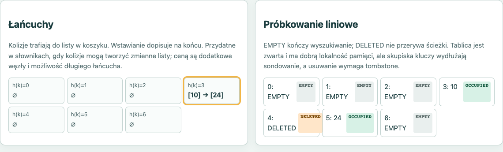

ASD1-M1-10 · Algorytmy i struktury danych I
Haszowanie i rozwiązywanie kolizji
Autor: Daniel Zawisza
Numer indeksu: 93796
Aplikacja: Laboratorium haszowania
Semestr I · 2026/2027
Mini-projekt M1
Autorstwo i pomoc AI opisane na slajdzie 9.
02 · Problem i cel
Funkcja h(k)=k mod m kieruje klucz do komórki.
Różne klucze mogą trafić w to samo miejsce.
Zrozumieć, jak łańcuchy i próbkowanie liniowe zachowują się przy wstawianiu, wyszukiwaniu, usuwaniu i przebudowie.
Odbiorca: student poznający tablice haszujące.
03 · Zakres
Sprawdzono również 5 przypadków działania interfejsu w lokalnym Chrome.
04 · Mechanizmy
h(k) → koszyk → porównuj węzły → dopisz na końcu albo usuń właściwy węzeł.
h(k), h(k)+1, … (mod m). EMPTY kończy; DELETED zachowuje ścieżkę.
Przy przebudowie aktywne klucze wracają do nowej tablicy według kolejności dodania.
05 · Struktury danych
Łańcuchy: tablica koszyków, każdy koszyk przechowuje listę.
Lista `order` zachowuje chronologię dodania dla rehashingu.
Próbkowanie: tablica rekordów `EMPTY`, `OCCUPIED`, `DELETED`.
Wstawianie pamięta `firstDeleted`, a sondowanie ma limit m kroków.
Wspólne zmienne: m, n, α=n/m, indeks bazowy, indeks sondowania i liczniki.
06 · Technologia i architektura
JavaScript działa w przeglądarce; testy uruchamiane w Node.js. Nie używa zewnętrznych bibliotek ani API.
Wersja i liczba testów: patrz `results/tests.json` i `results/comparison.json`.
07 · Interfejs

Rys. 1. Wyszukiwanie 24 po usunięciu 17 — rzeczywisty zrzut, 26.10.2026.
08 · Testy i porównanie
14/14 testów PASS (Node v20.20.2, 2026-10-26).
Łańcuchy: 3 porównania / 3 odwiedziny
Próbkowanie: 6 / 11
Łańcuchy: 11 porównań / 11 odwiedzin
Próbkowanie: 11 / 16
Każda historia obejmuje 2 wyszukiwania (trafione i nietrafione) oraz usunięcie. Rehash: osobno. Szczegóły w results/comparison.json.
09 · Wnioski i ograniczenia
Autorstwo i AI: Autor projektu: Daniel Zawisza. Przy opracowaniu kodu, testów, wizualizacji i materiałów wykorzystano narzędzia AI: OpenClaw oraz Codex. Poprawność działania sprawdzono testami automatycznymi i kontrolą interfejsu; wyniki znajdują się w raportach dołączonych do projektu.
Źródło: Princeton Algorithms, Hash Tables; adres w dokumentacji.
10 · Pokaz po slajdach
Po demonstracji — pytania i wyjaśnienie kodu.